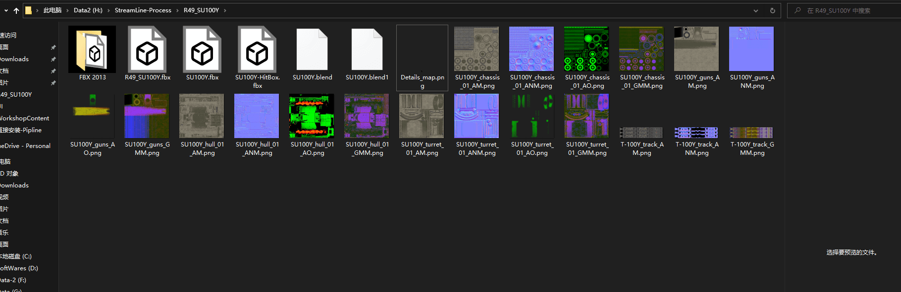

17-2. 逆向案例 遮罩贴图
以下内容仅用于学习交流，禁止用于商业。 Unity URP 用一张贴图，三个通道对应了三个值，而 WOT 用了两张贴图，所以制作了一个工具将两张贴图的通道信息转化为 Unity URP 支持的通道信息。
工具准备
贴图准备
 格式转为 png
环境准备
- 安装 Python3
- 安装 Python 包 opencv2 numpy
可参考如下命令行 pip install opencv-python -i https://mirrors.aliyun.com/pypi/simple/ pip install numpy -i https://mirrors.aliyun.com/pypi/simple/
脚本，打开txt，贴入以下内容，储存为 wgRemap.py
# WG 贴图逆向 转为 URP / HDRP Mask 贴图
import os
import argparse
import cv2
import numpy as np
parser = argparse.ArgumentParser(description="Wargaming Texture Remap")
parser.add_argument('-d', '--dir', default=".")
args = parser.parse_args()
for root, dirs, files in os.walk(args.dir, topdown=True):
for name in files:
file = os.path.join(root, name)
if "GMM" in file and "meta" not in file:
img = cv2.imread(file)
y, x, z = img.shape[0:3] # 获得的是高度、宽度、通道
print(file,"size:",y,x)
aoImg = cv2.imread(file[:-7] + "AO.png")
if aoImg is not None:
# 尝试同目录下寻找 AO 贴图
aoImg = cv2.resize(aoImg,(x,y))
_,ao,_ = cv2.split(aoImg)
else:
# Ops... 没有找到 AO 贴图 用单位矩阵代替
ao = np.ones((y,x,1),dtype=np.uint8)
b,g,r = cv2.split(img) # g -> Metallic r -> Smoothness
empty = np.zeros((y,x,1),dtype=np.uint8)
# Unity Mask
# Red Metallic
# Green Occlusion
# Blue Detail mask
# Alpha Smoothness
channel_list = [empty,ao,g,r]
new_image = cv2.merge(channel_list)
cv2.imwrite(name, new_image)
print(name + " is write to disk")
执行案例： python .\wgRemap.py -d H:\StreamLine-Process\R49_SU100Y\
贴图配置
切换 Shader 为 SRP-Vehicle-Camouflage
 将 AM 放在 BaseMap
将 ANM 放在 BumpMap
将 GMM 放在 MaskMap
4. Mask 贴图编辑器内预览
将 AM 放在 BaseMap
将 ANM 放在 BumpMap
将 GMM 放在 MaskMap
4. Mask 贴图编辑器内预览
实际效果